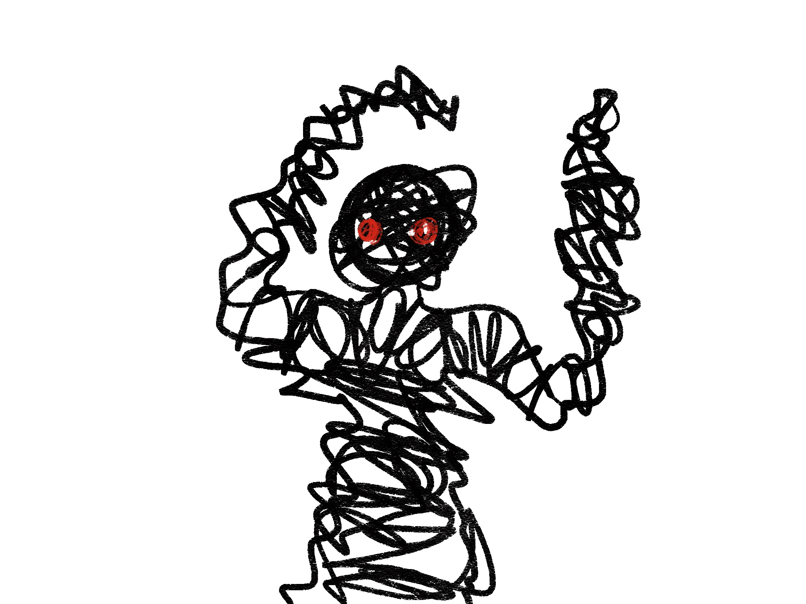

My hand feels the cold ground as I back up against the wall facing the unknown creative before me. I notice the red eyes glowing harder as I back up. The creature then reveals itself under the midnight moonlight to reveal a questionable horrendous being. I had no idea what it was or what it would do to me. I was terrified thinking that every step the creature took near me was a second away from death.
